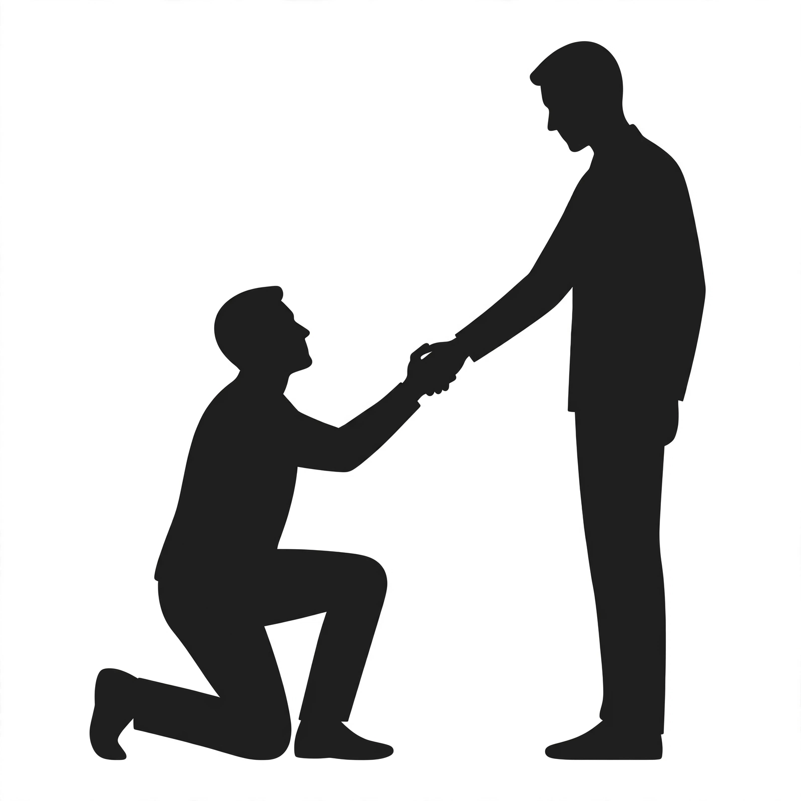

Pilar 10: Autoquestionário da Libertação
O vício não surge no vácuo; ele é, na imensa maioria das vezes, a cicatriz visível de feridas profundas cravadas na infância e na juventude. Injustiças domésticas, abusos morais, agressões físicas e o luto infantil não resolvido transformam-se em bombas relógio emocionais. Quando o indivíduo não dispõe de ferramentas morais e espirituais na aurora da vida, o cérebro recorre ao entorpecimento químico, à compulsão e ao isolamento como refúgios inconscientes para anestesiar a dor da rejeição e da revolta.
"As feridas infligidas na infância sem o devido confronto e reparação tornam-se prisões invisíveis, onde o adulto tenta se esconder por meio do vício e da fuga sistemática." — Albert Einstein (Princípios de Análise Comportamental)
A Sagrada Escritura aponta para a necessidade urgente de examinar o passado, expor as trevas e buscar a cura das raízes que travam o desenvolvimento do homem:
"Curou os quebrantados de coração, e lhes ligou as feridas." (Salmos 147:3)
"Porque não há coisa oculta que não haja de manifestar-se, nem coberta que não haja de saber-se e vir à luz." (Lucas 8:17)
Enquanto o homem mantiver escondidas as marcas de abusos e injustiças sofridas na aurora da existência, continuará usando a adicção como muleta e desabado emocional. O tratamento clínico e psicobíblico exige coragem cirúrgica para encarar o passado face a face, arrancando do inconsciente as justificativas falsas que alimentam a dependência.
"Um povo — ou um indivíduo — que desconhece ou oculta as verdadeiras causas de sua ruína está condenado a repetir o ciclo da escravidão." — Enéas Carneiro
A lucidez estratégica de grandes líderes históricos reforça que enfrentar o âmago do problema é o único caminho para a soberania:
"A coragem não é a ausência do medo ou da dor do passado, mas o triunfo definitivo sobre eles através da ação consciente." — Nelson Mandela
Preencha os campos abaixo com total franqueza clínica. Este mapeamento direto expõe o refúgio inconsciente onde o vício se abrigou, permitindo a neutralização definitiva dos gatilhos traumáticos de sua história.
O Autoquestionário da Libertação encerra o ciclo de desculpas fundadas em traumas antigos. A reconciliação verdadeira não apaga o passado, mas retira dele o poder de governar o seu presente. O homem lúcido assume o controle de sua história.
"Irmãos, quanto a mim, não julgo que o tenha já alcançado; mas uma coisa faço, e é que, esquecendo-me das coisas que atrás ficam, e avanço para as que estão diante, pressiono em direção ao alvo." (Filipenses 3:13-14)
A estrutura terapêutica e psicobíblica foi entregue. A resolução das marcas do passado e a aplicação implacável da disciplina dependem unicamente da sua decisão soberana.
← Voltar ao Menu Principal